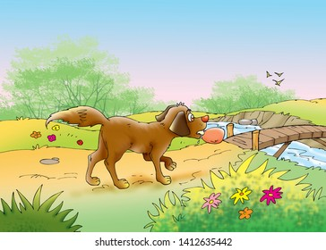
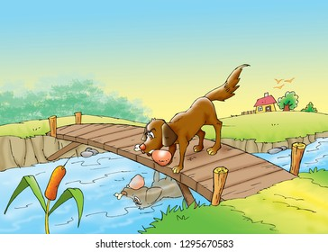
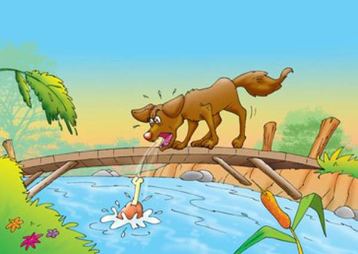

Once upon a time there was a hungry dog searching for food. He searched the whole city but found nothing but disappointment. He was just walking his way to sub-urbs when we he found a delicous looking piece of meat. He ran to it like it
was last grain of food present!

Scene 2
He picked it up and thought of going to a calm place to eat it. He remembered that sometime ago his friend told him that on the other side of river there is the best spot to eat. Thus he was merrily walking towards the brigde with the
piece of meat in his mouth.
br

Scene 3
He finally reached the bridge he was upmost excited to enjoy his lunch. While corssing the brigde he saw his reflection in the calm waters. He also saw the reflection of meat. But he thought the reflection as another dog and meat.

Scene 4
He thought if he could scare way the dog the another piece of meat would he is! He began barking at his own reflection mistaking it for another dog. But as he opened his mouth the piece of steak fell into the water. He was shocked and
he bagan crying. But what crying over sour milk.....